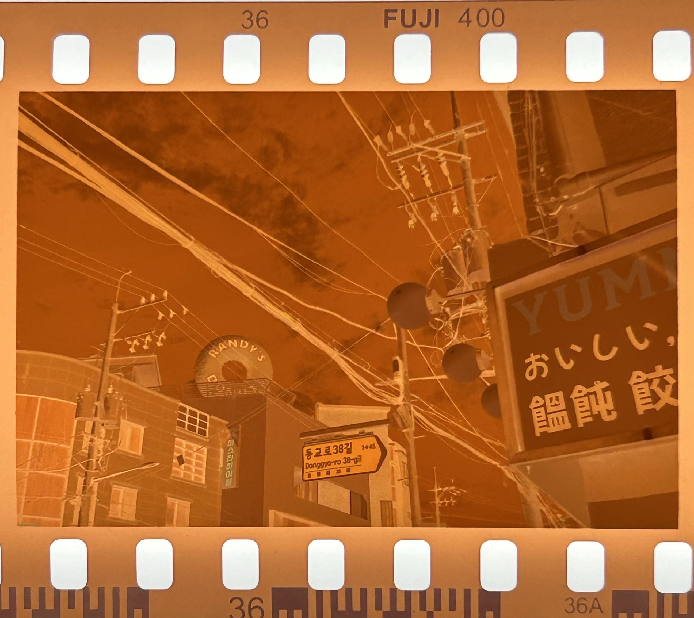

This page is for App Review. Moment has no login, no subscriptions, and no user accounts. All image processing runs on-device.
Moment is a film scanner app that turns developed film negatives into digital photos on your smartphone. Target users: people who shoot or keep analog film and want a simple way to digitize it without a dedicated scanner.
Please download or long-press/save this image to your phone’s gallery, then import it in Moment:

Direct file: sample-negative.jpg
We do not request App Tracking Transparency for advertising tracking prompts beyond standard ad SDK behavior as configured.
App features are the same worldwide. Ad creatives may vary by region (AdMob fill).
If a screen recording is provided, it will be linked here:
[Add your screen recording URL here after upload]
Developer: Yongmin Ahn
Email: ahnimmanuel@gmail.com
Privacy: https://ahn-yongmin.github.io/moment_web/
이 페이지는 App Review용 안내입니다. Moment는 로그인·구독·계정이 없으며, 이미지 처리는 기기 안에서만 이루어집니다.
현상된 필름(네거티브)을 스마트폰에서 디지털 사진으로 바꾸는 필름 스캐너 앱입니다. 전용 스캐너 없이 촬영하거나 갤러리에서 가져와 색을 복원하고 저장할 수 있습니다.
이미지를 사진 앱에 저장한 뒤 Moment에서 불러와 주세요:
파일 직접 받기: sample-negative.jpg
기능은 전 세계 동일합니다. 광고 소재만 지역에 따라 달라질 수 있습니다.
화면 녹화 링크:
[업로드 후 URL을 여기에 추가]
개발자: Yongmin Ahn
이메일: ahnimmanuel@gmail.com
개인정보처리방침: https://ahn-yongmin.github.io/moment_web/
{kind=link}